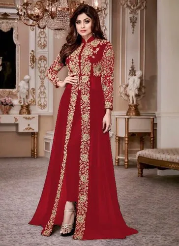
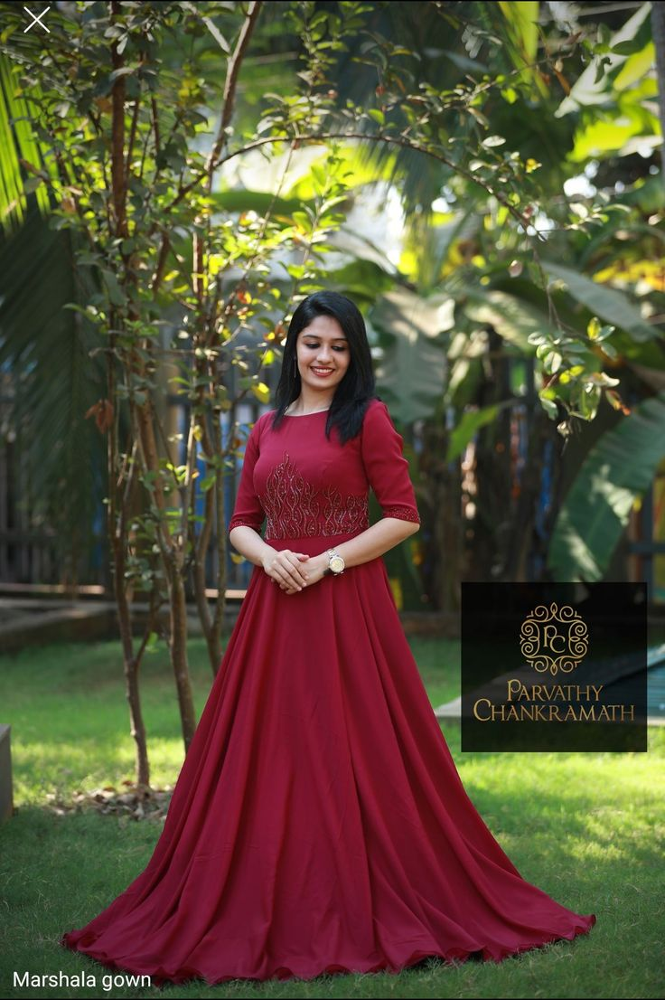

Anarkali
Anarkali is a legendary figure in
South Asian history and folklore.
According to popular legend,
Anarkali was a beautiful courtesan in
the court of the
Mughal Emperor.

Frock
A frock typically refers to a dress,
especially one that is long, loose-fitting,
and often made of lightweight fabric.
The term "frock" can be used to describe
various styles of dresses.

Chudidhar
A churidar typically consists
of a long
tunic known as a "kurta" or "kameez,
" which is
paired with fitted trousers
called "churidar bottoms.
" These bottoms
are characterized by their snug